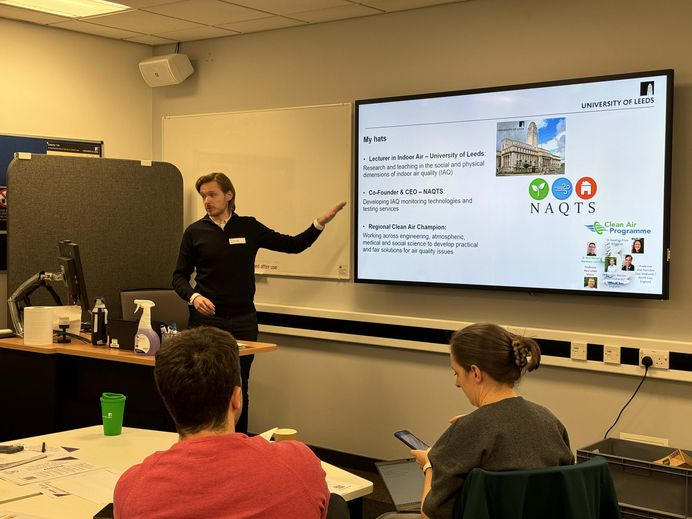
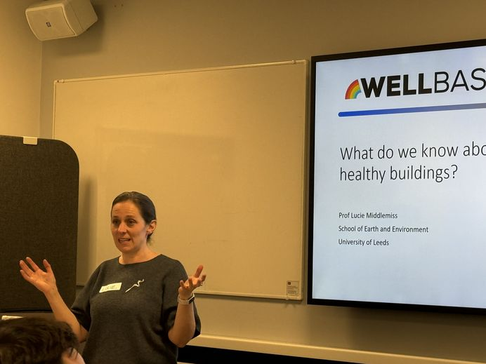
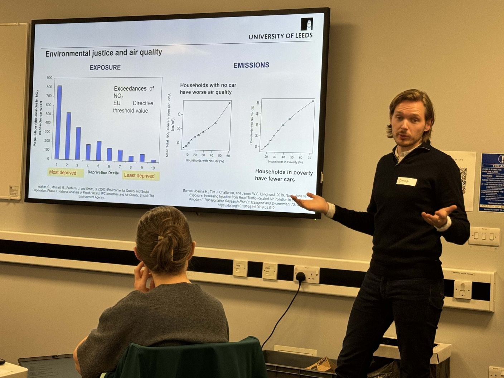
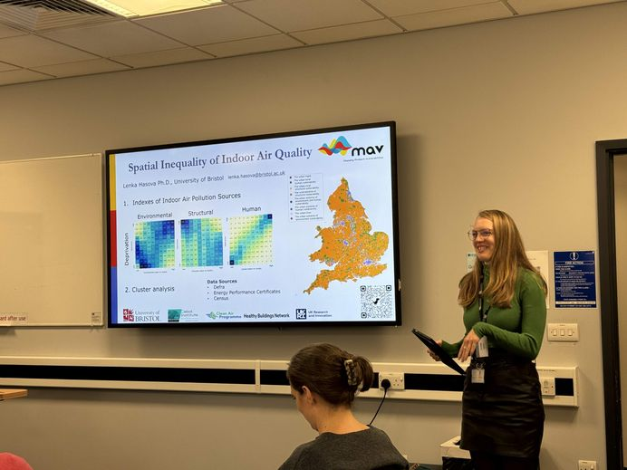
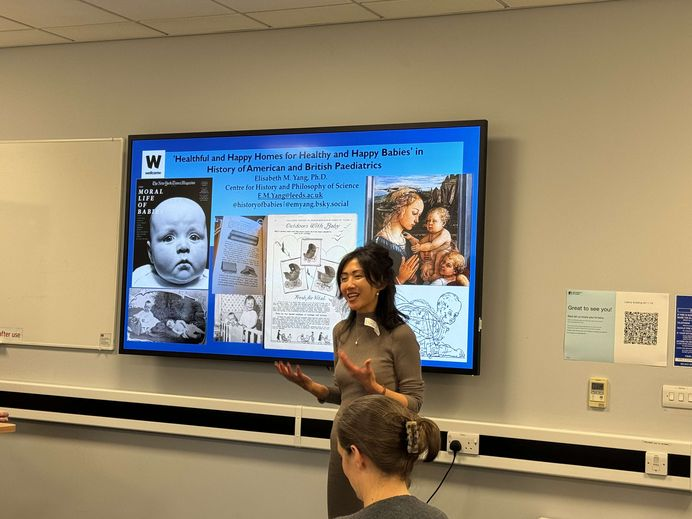
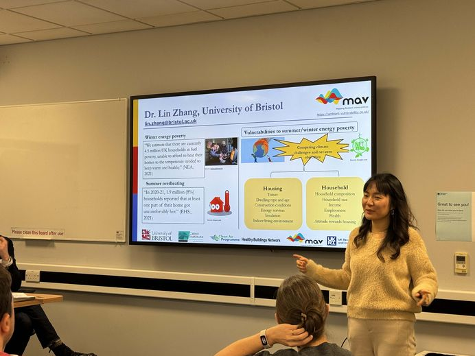
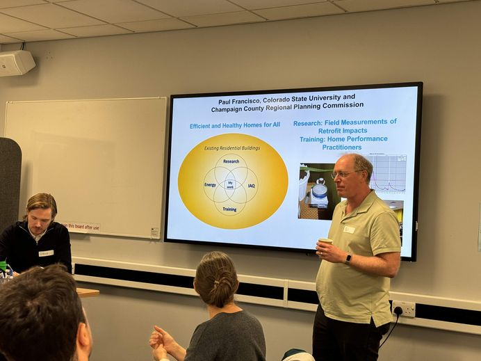

The built environment plays a pivotal role in driving both climate change and influencing health and wellbeing. Efforts to decarbonise and to improve health outcomes often fail to align — and on 27 November 2024, the Healthy Buildings Network brought together researchers from across the UK and beyond to work out where the friction really lies.
Hosted by Dr Doug Booker and Prof Lucie Middlemiss, both of the University of Leeds, the workshop on "The Indoor Air Quality and Energy Interface" drew 21 participants from 7 institutions and 8 disciplines — environmental science, sociology, engineering, geography, building physics, and public health among them. The day mixed kick-off talks, a run of sandpit-style breakout sessions, and a fair amount of networking over coffee.
Two Hosts, One Interface
Dr Doug Booker — Lecturer in Indoor Air at Leeds, Co-Founder and CEO of NAQTS, and a Regional Clean Air Champion — opened by explaining how his work sits at the crossing point of research, monitoring technology, and public policy. His own talk turned to environmental justice: households without a car consistently show worse air quality, and households in poverty are far less likely to own one — the exposure and the emissions burden land unevenly, and not in the direction you'd hope.


Prof Middlemiss, from the School of Earth and Environment, pushed on energy justice and fuel poverty — reminding the room that technical fixes for buildings can't be considered in isolation from who can actually afford to live in them. Her presentation set up a theme that ran through the whole day: the energy-efficiency and indoor-air-quality nexus is as much a social equity question as an engineering one.

A Network Backing New Ideas

Between the research talks, HBN Leeds used the room to explain what the network could actually do for the collaborations forming in front of us: monthly research seminars, early-career events, hands-on workshops, and — announced on the day — a pump-priming programme open for applications, alongside a smaller Idea Development Fund (up to £3k) and Networking Grant (up to £1k) for activities that trigger new collaboration.
It set the tone for the rest of the day: this wasn't a workshop for talking about research in the abstract, it was one designed to turn into funded proposals.
A Variety of Other Talks
Beyond the two hosts, the programme ranged well outside Leeds and well outside engineering.
Paul Francisco — Colorado State University / Champaign County Regional Planning Commission
An American perspective on "Efficient and Healthy Homes for All" — field measurements of retrofit impacts and training programmes for home performance practitioners.
Lenka Hasova — University of Bristol
Spatial inequality of indoor air quality — mapping environmental, structural, and human vulnerability indexes against deprivation across England, part of the Mapping Ambient Vulnerabilities (MAV) project.
Dr Lin Zhang — University of Bristol
Also from the MAV project — winter energy poverty and summer overheating as two faces of the same vulnerability, shaped by housing tenure, dwelling age, and household composition.
Darpan Das — University of York
Managing the spatial and temporal variability of pollutants — from CFD simulation of indoor exposure through to low-cost sensing with the BlueSky air monitor.
Elisabeth M. Yang, PhD — Centre for History and Philosophy of Science, Leeds
The one that turned heads: a history of "healthful and happy homes for healthy and happy babies" in American and British paediatrics — a reminder that the healthy-home ideal is nothing new.




Sandpit Breakouts
The afternoon moved from listening to doing: three rounds of sandpit-style breakout discussions, each followed by feedback to the whole room, designed to turn the morning's talks into collaborative project ideas.
Measuring Success
Metrics and methodologies for evaluating energy efficiency and indoor air quality together in residential settings.
Policy Implications
How this research can inform building regulations and energy policy to better protect vulnerable populations.
Interdisciplinary Approaches
Where engineering, social science, and the humanities can actually collaborate rather than talk past one another.
Outcomes & Next Steps
Working groups formed on the day to develop proposals for HBN's pump-priming funding.
Thank you
To Doug and Lucie for hosting, to every speaker who travelled in — from York to Bristol to Colorado — and to everyone who stayed for the sandpit sessions and helped turn a day of talks into working groups. Several collaborative project ideas came directly out of this workshop, and HBN continues to support them through pump-priming funding, follow-up events on specific themes, and help with larger external funding applications.
The workshop took place on 27 November 2024 at the University of Leeds. If you'd like to get involved with HBN's work on energy and indoor air quality, join the network or get in touch.